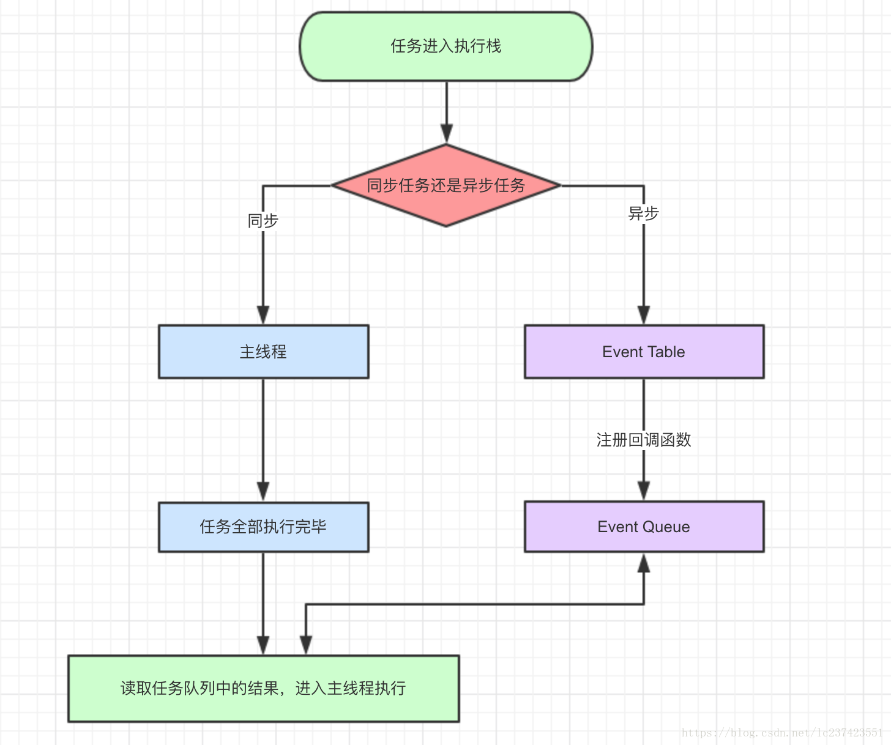
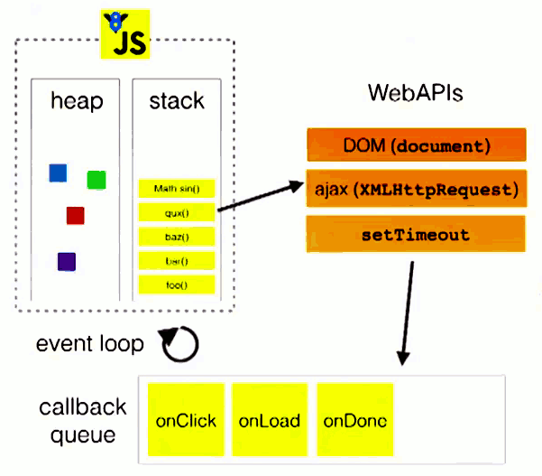
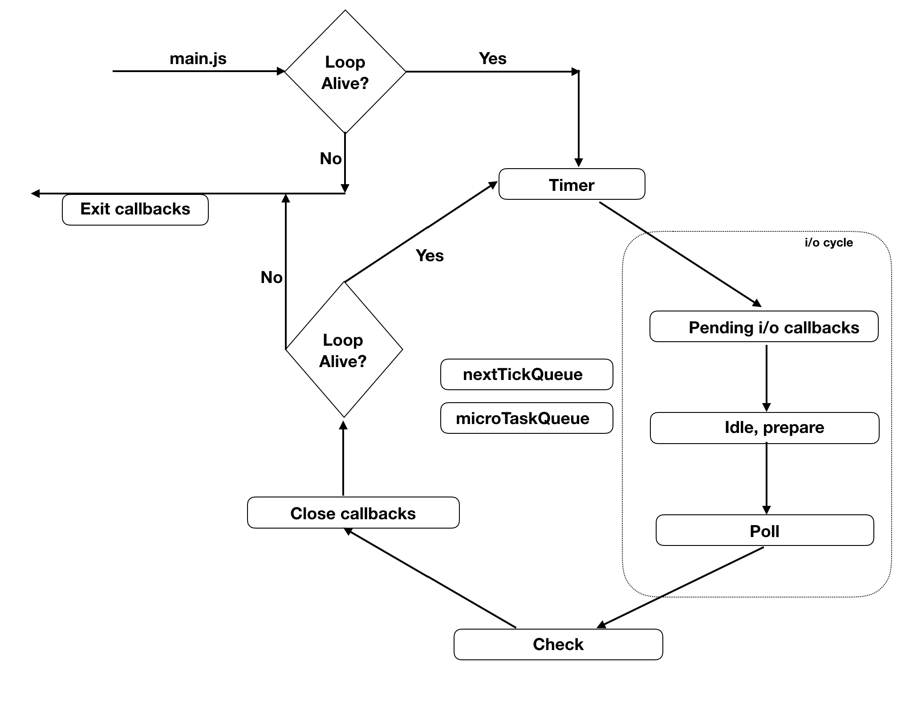

Nodejs系列-2-EventLoop
概述
从诞生最初，JavaScript就是单线程，这已经成了这门语言的核心特征，将来也不会改变。
为了利用多核CPU的计算能力，HTML5提出Web Worker标准，允许JavaScript脚本创建多个线程，但是子线程完全受主线程控制，且不得操作DOM。所以，这个新标准并没有改变JavaScript单线程的本质。
任务队列
js中所有的任务可以分为两种：一种是同步任务（synchronous），另一种是异步任务（asynchronous）。
同步任务：在主线程上排队执行的任务，只有前一个任务执行完毕，才能执行后一个任务； 异步任务：不进入主线程、而进入”任务队列”（task queue）的任务，只有”任务队列”通知主线程，某个异步任务可以执行了，该任务才会进入主线程执行(被放入队列不会立刻执行其回调，而是等待当前执行栈中的所有任务都执行完毕，主线程处于闲置状态时，才会去执行任务队列)。
PS: 异步任务一定会有两个线程参加，但异步任务不是指两个线程执行任务。而是指某个线程中执行的两个动作，前一个动作立即执行，后一个动作在未来某个时刻执行的这种模式。譬如ajax请求，代码执行到发起请求的时候是同步的，但结果返回是在未来的某个时刻，所以这部分是异步的。
简单记录下看到一道面试题而引发的一些思考。
任务队列的执行机制如下：
所有同步任务都在主线程上执行，形成一个执行栈（stack）。
主线程之外，还存在一个”任务队列”（queue）。只要异步任务有了运行结果，就在”任务队列”之中放置一个事件。
一旦”执行栈”中的所有同步任务执行完毕，系统就会读取”任务队列”，看看里面有哪些事件。那些对应的异步任务，于是结束等待状态，进入执行栈，开始执行。
主线程不断重复上面的第三步。
只要主线程空了，就会去读取”任务队列”，这就是JavaScript的运行机制。这个过程会不断重复

Event Loop
主线程从“任务队列”中读取事件，这个过程是循环不断的，所以整个机制运作机制又成为EventLoop（事件循环）
下图是EventLoop机制示意图（转引自Philip Roberts的演讲《Help, I’m stuck in an event-loop》））

主进程运行的时候会产生 堆(heap) 和 栈(stack), 栈中的代码会调用各种API，他们在任务队列中加入各种事件（click,load,done等），只要栈中的代码执行完毕，主线程就会去读取“任务队列”，依次执行那些事件对应的回调函数。
宏任务（macroTask）和微任务（microTask）
EventLoop循环过程中，因为异步任务之间并不相同，因此他们的执行优先级也有区别。不同的异步任务被分为两类：微任务（micro task）和宏任务（macro task）：
以下事件属于宏任务：
setInterval()
setTimeout()
setImmediate() （nodejs中才有）
以下事件属于微任务
promise.then()
process.nextTick() （nodejs中才有，且preocess.nextTick优先级大于promise.then）
微任务总会在下一个宏任务之前执行，在本身所属的宏任务结束后立即执行。如果在微任务执行期间微任务队列加入了新的微任务，会将新的微任务加入队列尾部，之后也会被执行。
nodejs的EventLoop与浏览器环境下的差异
在node中，事件循环表现出的状态与浏览器中大致相同。不同的是node中有一套自己的模型。node中事件循环的实现是依靠的libuv引擎。
process.nextTick 和 setImmediate
process.nextTick属于微任务，它指定的任务总是在下一个宏任务之前执行。
setImmediate属于宏任务。表示立即执行。但是它指定的任务执行顺序是不确定的：
setTimeout(() => {
console.log('timeout');
}, 0);
setImmediate(() => {
console.log('immediate');
});
运行结果可能是immediate timeout，也可能是timeout immediate。但是，在一个I/O事件的回调中，可以准确判断两个方法回调的执行顺序：setImmediate先于setTimeout。
setTimeout(() => {
setImmediate(() => {
console.log('setImmediate');
});
setTimeout(() => {
console.log('setTimeout');
}, 0);
}, 0);
这种情况下setImmediate永远先于setTimeout。
可以做如下总结：
- 如果两者都在主模块中调用，那么执行先后取决于进程性能，也就是随机。
- 如果两者都不在主模块调用（被一个异步操作包裹），那么setImmediate的回调永远先执行。
libuv引擎中的事件循环的模型
┌───────────────────────┐
┌─>│ timers │
│ └──────────┬────────────┘
│ ┌──────────┴────────────┐
│ │ I/O callbacks │
│ └──────────┬────────────┘
│ ┌──────────┴────────────┐
│ │ idle, prepare │
│ └──────────┬────────────┘ ┌───────────────┐
│ ┌──────────┴────────────┐ │ incoming: │
│ │ poll │<──connections─── │
│ └──────────┬────────────┘ │ data, etc. │
│ ┌──────────┴────────────┐ └───────────────┘
│ │ check │
│ └──────────┬────────────┘
│ ┌──────────┴────────────┐
└──┤ close callbacks │
└───────────────────────┘
node中的事件循环的顺序：
外部输入数据–>轮询阶段(poll)–>检查阶段(check)–>关闭事件回调阶段(close callback)–>定时器检测阶段(timer)–>I/O事件回调阶段(I/O callbacks)–>闲置阶段(idle, prepare)–>轮询阶段…
nodejs每一轮事件循环的六个阶段：
- timers: 这个阶段执行定时器队列中的回调如 setTimeout() 和 setInterval()。
- I/O callbacks: 这个阶段执行几乎所有的回调。但是不包括close事件，定时器和setImmediate()的回调。
- idle, prepare: 这个阶段仅在内部使用，可以不必理会。
- poll: 等待新的I/O事件，node在一些特殊情况下会阻塞在这里。
- check: setImmediate()的回调会在这个阶段执行。
- close callbacks: 例如socket.on(‘close’, …)这种close事件的回调。
贴一张其他讲解中的nodejs下eventLoop的流程图

相关试题
题目一
async function async1() {
console.log("async1 start");
await async2();
console.log("async1 end");
}
async function async2() {
console.log("async2");
}
console.log("script start");
setTimeout(function() {
console.log("setTimeout");
}, 0);
async1();
new Promise(function(resolve) {
console.log("promise1");
resolve();
}).then(function() {
console.log("promise2");
});
console.log("script end");
执行结果：
script start
async1 start---
async2
promise1
script end
async1 end
promise2
setTimeout
解释
- 主线程顺序执行，先输出 “script start” 没什么问题。
- 执行到setTimeout，这是一个异步任务，且为宏任务（macroTask），推入任务队列（queue）。继续执行主线程内代码。
- 接着执行async1函数，这是一个异步函数，执行过程与普通函数没区别，输出”async1 start”, 然后遇到了await。
- await命令后面可以是 Promise 对象和原始类型的值（数值、字符串和布尔值，但这时会自动转成立即 resolved 的 Promise 对象）。此时会把async2函数转成
return new Pomise((resolve)=>{console.log("async2");resolve(undefined)}),因此会输出”async2”,然后跳出async1函数，继续执行主线程内的代码，发起一个微任务（microTask），等到异步操作完成，再接着执行函数体内后面的语句。 - 继续执行遇到了一个promise对象，输出”promise1”后，再发起一个微任务（microTask），跳出对象，继续执行主进程内的代码
- 遇到
console.log("script end"),便输出”script end”,此时主进程代码执行完毕，主线程就会去读取“任务队列”，先执行微任务，再执行宏任务。 - 首先，进入async1函数，执行await后函数体内容，输出”async1 end”
- 然后，进入promise对象执行resole方法，输出”promise2”
- 最后，执行setTimeout宏任务,输出”setTimeout”
问题
其实对于上述第7和8步的执行顺序是存在争议的（promise2 和 async1 end 的顺序），具体可参照参考文章的关于 async 函数的理解。
chrome 71之前的版本，await 执行时要额外创建出两个 promise（有时会是多个），会导致promise2先于async1执行，但这种方式创建多个Promise对象的开销很大，所以chrome73进行了优化，所以按正常流程理解就好，无需太纠结于异步任务的执行顺序，且async2函数有没有通过async声明执行结果都一致。
题目二
async function asyncTest1() {
console.log('2');
await console.log('3');
}
async function asyncTest2() {
await console.log('4');
console.log('5');
}
async function asyncTest3() {
await new Promise(function (resolve) {
console.log('6');
resolve();
}).then(function () {
console.log('7');
});
console.log('8');
}
console.log('1');
setTimeout(function () {
console.log('9');
new Promise(function (resolve) {
console.log('10');
resolve();
}).then(function () {
console.log('11');
})
asyncTest1();
});
asyncTest2();
asyncTest3();
new Promise(function (resolve) {
console.log('12');
resolve();
}).then(function () {
console.log('13');
});
可以按上面思路分析一下执行结果：
1 4 6 12 5 7 13 8 9 10 2 3 11
题目三
console.log("start")
setTimeout(function () {
console.log('timeout1');
process.nextTick(function () {
console.log('timeout1_nextTick');
})
new Promise(function (resolve) {
console.log('timeout1_promise');
resolve();
}).then(function () {
console.log('timeout1_then')
})
},0)
setTimeout(() => {
console.log('timeout2');
process.nextTick(() => {
console.log('timeout2_nextTick1');
process.nextTick(() => {
console.log('timeout2_nextTick2');
});
});
process.nextTick(() => {
console.log('timeout2_nextTick3');
});
console.log('sync');
setTimeout(() => {
console.log('timeout2_2');
}, 0);
}, 0);
执行结果：
start
timeout1
timeout1_promise
timeout1_nextTick
timeout1_then
timeout2
sync
timeout2_nextTick1
timeout2_nextTick3
timeout2_nextTick2
timeout2_2
注意理解的是：微任务总会在下一个宏任务之前执行，宏任务内部的微任务执行完毕才会进入下一个宏任务执行；宏微任务内嵌套的微任务的执行顺序，timeout2_nextTick3 先于 timeout2_nextTick2执行。